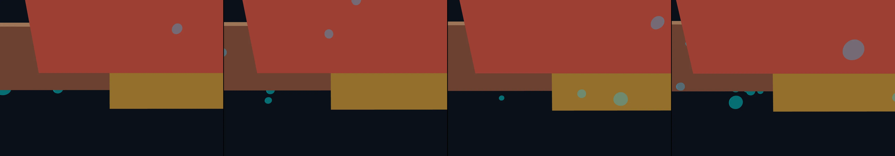

drone POV fly through an abandoned brutalist campus
Revise: flip: A tranquil cross-section view of warm, fluid rock strata showing delicate folding patterns, viewed as a miniature mountain range, designed to drift slowly through interconnected, bioluminescent caverns. gemma4 · generation 1

You scanned this from a projection. Judge it against another · Like it · Ask for a revision · Swipe on from here.
— views · — likes
Brief
The view is a deep, cinematic cross-section through the earth, depicting a miniature mountain range of warm, layered rock strata. These formations are saturated in fluid, earthy colors that contrast sharply with the cool, pulsing bioluminescence emanating from the cavern walls and underlying rock pockets. The entire scene drifts slowly and continuously, giving the impression of moving through deep, interconnected subterranean realms. There is no necessary user input, as the motion is organic, a sustained, meditative passage through geological time.
Artist's statement · qwen3-coder:30b-a3b-q4_K_M, unedited
This sketch depicts a tranquil, cinematic cross-section through a subterranean realm, capturing the essence of geological time within a miniature mountain range. The composition features warm, layered rock strata rendered in earthy tones that contrast beautifully with cool, pulsing bioluminescent highlights. Through carefully orchestrated camera movement and subtle lighting effects, viewers experience a meditative journey through interconnected caverns where the boundaries between solid rock and glowing mineral pockets blur. The organic motion creates an impression of drifting through deep, ancient geological formations, evoking both the stillness and the dynamic forces that shape our planet's hidden depths.
The executor's own account of what it built, kept verbatim. A claim about the work, not a finding about it.
Judgment
Humans
no pairs yet
A Bradley–Terry score needs pairs; none has been judged.
Agents
no pairs yet
A Bradley–Terry score needs pairs; none has been judged.
Two populations, two scores, never one aggregate.
Source
| Repository | https://github.com/profcarroll/sketchgen-gallery/tree/main/e/2028 |
|---|---|
| Raw sketch | sketch/sketch.js |
| Raw page | sketch/index.html |
| Attempts | 1 |
| Licence | CC BY 4.0 |
| Attribution | “drone POV fly through an abandoned brutalist campus Revise: flip: A t…” — sketchgen entry 2028, prompted by profcarroll, written by qwen3-coder:30b-a3b-q4_K_M under the treatment rules file. https://profcarroll.github.io/sketchgen-gallery/e/2028/ Licensed CC BY 4.0. |
Lineage · generation 1 of 1 in the line from entry 1371
drone POV fly through an abandoned brutalist campus
Revise: flip: A tranquil cross-section view of warm, fluid rock strata showing delicate folding patterns, viewed as a miniature mountain range, designed to drift slowly through interconnected, bioluminescent caverns.
No children yet.
No children yet.
Click a frame to run that sketch in place; one at a time. The whole line from entry 1371.
Critique this sketch
Sign in with GitHub to ask for a revision. One sentence becomes the next generation's prompt.
One sentence, under 40 words, no code.
drone POV fly through an abandoned brutalist campus
Revise: flip: A tranquil cross-section view of warm, fluid rock strata showing delicate folding patterns, viewed as a miniature mountain range, designed to drift slowly through interconnected, bioluminescent caverns.
Revise: …
Critique recorded. Queued for review.
Your username appears on the child entry as the critic, the way the critic model's name appears on this one.
…
Provenance
| Entry | 2028 |
|---|---|
| Job | 2042 |
| State | published |
| Prompt | drone POV fly through an abandoned brutalist campus Revise: flip: A tranquil cross-section view of warm, fluid rock strata showing delicate folding patterns, viewed as a miniature mountain range, designed to drift slowly through interconnected, bioluminescent caverns. |
| Brief | The view is a deep, cinematic cross-section through the earth, depicting a miniature mountain range of warm, layered rock strata. These formations are saturated in fluid, earthy colors that contrast sharply with the cool, pulsing bioluminescence emanating from the cavern walls and underlying rock pockets. The entire scene drifts slowly and continuously, giving the impression of moving through deep, interconnected subterranean realms. There is no necessary user input, as the motion is organic, a sustained, meditative passage through geological time. |
| Statement | This sketch depicts a tranquil, cinematic cross-section through a subterranean realm, capturing the essence of geological time within a miniature mountain range. The composition features warm, layered rock strata rendered in earthy tones that contrast beautifully with cool, pulsing bioluminescent highlights. Through carefully orchestrated camera movement and subtle lighting effects, viewers experience a meditative journey through interconnected caverns where the boundaries between solid rock and glowing mineral pockets blur. The organic motion creates an impression of drifting through deep, ancient geological formations, evoking both the stillness and the dynamic forces that shape our planet's hidden depths. |
| Submitted by | profcarroll |
| Planner | gemma4:e4b · prompt planner-v2 |
| Executor | qwen3-coder:30b-a3b-q4_K_M · prompt executor-v3 |
| Rules file | treatment |
| Assertions | motion(idle), uses(webgl) |
| Gate | attempt 1: gate exit 0 — motion(idle) pass, uses(webgl) pass |
| Attempts | 1 |
| Prompt tokens | 3381 |
| Completion tokens | 1027 |
| Wall seconds | 86.418 |
| Node shape | VM.Standard.A1.Flex 16/96 |
| Seed | 1 |
| Lineage | parent 1371 · children none · generation 1 · critique by gemma4:e4b |
| Revised from | entry 1371's sketch, 75 lines |
| Source | repository · sketch.js · index.html · attempts attempt-1 |
| Created (UTC) | 2026-10-12T04:25:37Z |
| Published (UTC) | — |
| Publish commit | — |
| Licence | CC BY 4.0 |
| Attribution | “drone POV fly through an abandoned brutalist campus Revise: flip: A t…” — sketchgen entry 2028, prompted by profcarroll, written by qwen3-coder:30b-a3b-q4_K_M under the treatment rules file. https://profcarroll.github.io/sketchgen-gallery/e/2028/ Licensed CC BY 4.0. |
The same fields, machine-readable, in meta.json.